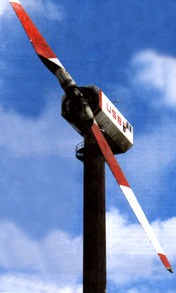
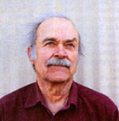
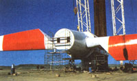
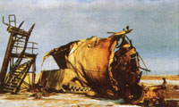
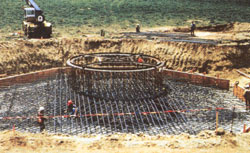
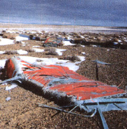
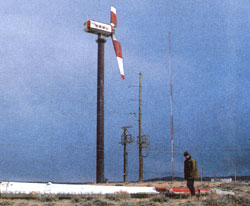
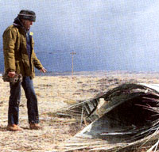

Energy & Environment
A Medicine Bow Wind Farmer Endures Alone.
While the wind whips the dry grass around him, Bill Young, a wind farmer, walks across the sage flat just across the south of Medicine Bow, Wyoming, picking up the windmill pieces as he goes. He explains where each piece belonged before the blades flew apart in a January storm, spreading machinery over six acres of prairie. A flock of horned larks flushes from the wreckage, scattering like hand-flung oats, and a cottontail browses behind a metal hulk the size of a car engine.
"That's a teeter lock," Young says, explaining that it kept the blades from wiggling on the shaft. He studies a fist-sized plastic box with two torn wires: "And here's a $600 pressure transducer." Beyond that is a $1,200 electrohydraulic valve, a keg-sized blue cylinder, embedded a foot deep in the soil. They are pieces of the largest windmill in the world. Behind Young, the rusty tower stands like a giant's leg, 262 feet tall, topped with a turbine housing and its splintered stubs of blades.
In a battle of giants, windmill versus Wyoming's wind, the windmill lost. Young, at 66, intends to start over. His wind farm is Medicine Bow Power, and his solitary, broken windmill is a Swedish Hamilton Standard WTS-4. Its single propeller, 257 feet from tip to tip, pumped up to four megawatts-enough for 1,600 homes-into the Pacific Power and Light system. That was at optimum wind speeds, between 40 and 60 miles an hour, which provided 100,000 foot-pounds of energy and drove the blade tips at 178 miles an hour. A pitch-control system feathered the blades-turned them sideways to lessen the power of wind against blade-when the wind speed climbed over 40 miles an hour. At 60, with blades fully feathered, the system shut down.
The project was conceived in 1978, when America and the Carter administration were dedicated to clean, alternative energy. The Bureau of Reclamation, NASA, and the Department of Energy joined forces to study the feasibility of combining wind and hydroelectric power for efficient energy during peak demand periods when people are home using appliances and furnaces. Dams on the nearby Platte River produce hydropower, but a dam can meet peak demand only by releasing more water. Naturally, that extra water is lost and the reservoir, like a drained battery, is diminished. Conveniently, winds in the area peak between 10 AM and 10 PM, the highest-demand hours, and are higher during winter, so adding wind power would then allow reservoirs to store more potential energy. Also, energy available at peak demand pe riods brings wind farms a higher price. Young was sure the project would work: "Here they were going to spend over $10 million to find out if wind and hydropower could mix. Any engineer could have figured that out." He laughs, "I would have been glad to tell them for, say, five million."
The project would also test economy of scale: The larger the windmill, the more power it can produce-and the more inexpensively it can produce it-up to a point. "It's a square-cube law," says Young. "As the power produced by a windmill is squared, its size must be cubed." Rather than build massive single-unit systems, most of the country's wind farms use much smaller machines, ranging between 100 and 400 kilowatts. It would take 40 of the 100-kilowatt machines to supply Medicine Bow's four megawatts (only one other wind generator of nearly equal size exists, a four-megawatt turbine in Canada). Lastly, the project would test the harmony of windmills and wildlife: Would animals be attracted to the tower or repelled by it? How many passing hawks and eagles would be killed by the blades?
Researchers chose Medicine Bow for the site because of its persistent winds, averaging 20 miles per hour and exceeding 100 in storms, and its nearby power substation, which would make it easy to hook into the power grid. The area is also sparsely inhabited. Just over the hill, at three miles, sits the town of Medicine Bow, little changed since Owen Wister's classic Western, The Virginian, in which he described the town as 29 buildings that "seemed to have been strewn there by the wind and waiting till the wind should come again and blow them away." The Union Pacific Railway, which brought Wister's narrator to Medicine Bow in 1902, easily carried the windmill blades, tower sections, and other bulky parts 80 years later.
Besides maintenance technicians, the project needed a head engineer. Young had worked for the Bureau of Reclamation in Wyoming for 25 years, after earning a degree in electrical engineering from Swarthmore University in Pennsylvania. His job was to maintain generators in hydroelectric plants-generators like the one to be driven by the Hamilton-Standard WTS-4. After 25 years of the same routine, Young thought the big windmill looked far more interesting and he signed on. Somewhere in the passing of time and of wind upon blade, his interest turned into dedication. He cannot recall any great events or turns of conviction to wind power. Though he does vividly remember climbing a windmill at his uncle's farm when he was eight and having to be gently talked down by his panicked father.
So Bill Young from Casper, the tower sections from Chicago, and the Hamilton Standard WTS-4 from Sweden converged in Medicine Bow, and a gallows frame was erected to hoist the tower. But the wind dealt the first blow: A violent thunderstorm toppled and destroyed the reinforcement-steel cage that sat ready for lowering into a 70-foot-deep hole for the footing. The cage was rebuilt, and the WTS-4 was erected by autumn 1982. It had a companion, a Boeing Mod 11, with a 200-foot tower and a 300foot propeller, capable of 2.5 megawatts.
The giant pair was on-line by March, 1983...sort of. Young laughs, still embarrassed, and explains: The WTS-4 was wired backwards. "We had created a huge fan. We had at least 8.4 megawatts flowing into the windmill, not from it." Engineers rewired hookups and put the windmill to work. By September 1, 1984, the WTS-4 had sold 1.8 million kilowatt-hours of energy to Pacific Power and Light. The Mod II had sold just over a half million kilowatt-hours.
Then, the Boeing dealt the second blow: First an inch-diameter propeller shaft cracked and technicians welded it; then a rotor bearing failed. It could have been catastrophic," says Young. "The whole hub could have fallen against the tower and collapsed it." He recalls a frightful moment when he was up in the nacelle, or machine housing, of the Boeing during a high-wind shutdown. Teeters, the machines that align the blade, "were banging against the hub," says Young, "like 20-pound hammers." Then six brake calipers, each the size of a dinner plate, seized the rotor, squealing like a braking freight train. Young could do nothing but cover his ears and wait. Problems continued, and the Boeing was dismantled in December 1984.
Politics dealt the final blow. After the Carter administration, in its environmental enthusiasm, conceived the plan and spent millions to build it, the enthusiasm ended with Ronald Reagan's tenure and the reign of Interior Secretary James Watt. Coal companies began opening new seams in Wyoming, and the new administration, no champion of alternative energy, subsidized new coal plants and suspended funding for Medicine Bow. By 1984, the project could not even afford to replace the airplane warning lights on the tower.
The giant windmill worked 4,000 hours until 1986, when its generator broke down, and the government put the entire project up for salvage sale. Young, refusing to give up, retired from the Bureau of Reclamation and bought the multimillion -dollar windmill for $20,000. He pulled the five-ton rotor out of the generator with come-alongs, rewound the rotor, spent one and a half years chipping metal fragments from its stator with a sharpened file, then reassembled the windmill. Repairs were a success: It operated for 3,500 hours from 1992 until it blew apart on January 14, 1994.
Young was working at his desk that day, while the big blades beat the sky a hundred yards away. As usual, there was a loud "whump" and a pounding pulse in the control room wall every second, as each blade sliced through the wind eddy behind the tower. Then it fell apart: "I looked up from my desk to see a 35-foot blade tip tear loose and fly 400 feet high and 600 feet downwind," he recalls. "The teeter lock, weighing about a ton, tore loose and smashed into the outhouse beneath the tower. Luckily, it wasn't occupied." Then the other blade tip slammed against the tower and ripped loose to follow the wind. More machinery toppled to the ground and a hundred gallons of hydraulic fluid bled from the lines, blackening the battleground below.
Ironically, what destroyed the windmill had been designed as a safety feature. Electronic sensors made continuous adjustments in the blade angle by controlling two pitch controls on each blade; two controls meant that if one failed, the other would back it up. "They developed a force fight," Young explains. "For each movement by one there was a reaction by the other-a very minute push and shove over the years." Finally the bolts in the hub gave out, and the disaster followed. As he did when the generator failed and the government pulled out, Young intends to work on. He has to climb the last 112 feet to the nacelle on an iron ladder because a shredded blade ripped the elevator moorings loose 150 feet from the ground. He keeps the blade stubs locked in their feathered position with cables, although the wind ripped these loose in a thunderstorm. He will gather the scraps, then dismantle and lower the giant turbine, but keep its 262-foot tower. Then, with help from investors, he will replace the defeated Ham Standard with a twomegawatt Gamma-60 made by an Italian company that bought the Hamilton Standard patent.
"No one knows what will happen when we cut one big blade end off and the other end comes swinging down," he says. Meanwhile he is installing a small windmill, a 65-kilowatt Danish Nordtank with a 52-foot propeller, on a 75-foot tower. Later, as investments permit, he'll install up to ten more Gamma-60s, selling up to 22 megawatts of power from a new wind farm. Fifteen miles south of Young's project, another wind farm is planned by Pacific Corps, a consortium of over 35 utilities. According to Bruce Morley, project originator, Pacific Corps will generate 70 megawatts-enough for 30,000 homes-using a Kenetech windmill with a 33-meter blade. The machine boasts the latest technology, a variable-speed turbine that can remain on-line even in wildly fluctuating winds. Morley admires his neighboring wind farmer. "Young's tenacity is amazing," he says. He adds that Medicine Bow has shown that wildlife is at peace with windmills, and windmills do not threaten raptors more than coal-plant smokestacks do. "The windmills have earned endorsements from the National Wildlife Federation and the Sierra Club;" Morley says.
Furthermore, interest in wind power is climbing, says Morley. A Cambridge Associates study showed that 72 percent of American households would choose cleaner power sources even if they paid more for them. And with predicted deregulation of utilities, each household will be able to choose its power company, allowing an option for wind or wind-hydro combinations. Traditional business communities, including ranchers, are interested in the wind-turned blades. Soon, perhaps, windmills will stand sentinel over the West's ranch herds, adding to ranchers' incomes as oil wells have done.
Bill Young doesn't look like a rancher. Nor does he look like an electrical engineer. With his wind-tossed hair, sun-squinted eyes, and green work fatigues, he looks more like a cross between Don Quixote and a mechanic. He watches the stark prairie, where antelope bands and cloud shadows wander the land, eagles and hawks wander the winds above. Young describes the horned larks fondly. They are a brave bird, willing to take chances, and they endure the harsh prairie well.
Young, too, will endure. He is convinced that clean, alternative power can pay off, but it needs investors and governmental support to compete with a heavily subsidized coal industry. He grins at his broken-armed giant. "We've learned from this, of course," he says. "The age of the big machines is not dead." He is sure the accident could have been prevented-it would have taken less than an hour a month to check wear on the teeter control bolts. He inspects them now, as he picks them up in the prairie wind.
Wind Industry News for the New Millennium
Of all the alternative energy technologies, wind turbine technology has most benefited from advances in engineering in the last ten years and has very recently begun to be regarded by utilities as the most economically viable alternative energy source. Wind energy costs reflect the more efficient and durable wind-turbine blades, and wind power developers are now offering wind-generated electricity at prices as low as 3.9 cents per kilowatt-hour. That's competitive with conventional energy costs and a more than 80 percent reduction from the costs for the first wind projects on-line in 1981.
But, the wind is fickle, which prevents the possibility of ever relying exclusively on wind power. So far the most likely way to use it is in combination with other energy sources. About a dozen utilities across the country are actively purchasing wind power or running their own wind power plants, and a dozen more utilities have made plans to build wind power plants or purchase wind power to supplement other energy sources. According to the National Wind Energy Association (NWEA), 3.5 billion kilowatt-hours of wind-generated electricity was produced at wind power plants across the country in 1994. (The average household consumes 9,400 kWh of electricity each year.) NWEA estimates that with today's technology, wind energy could supply about 20 percent of the nation's electricity. But the potential is much greater. North Dakota alone could produce enough wind-generated power to serve more than one-third of U.S. electricity consumption.
Today, wind farms consist of groups of large machines configured in one location, many times connected to each other and to a grid via computer. Ranchers in Texas and California are receiving royalties from their windmills without disrupting their ranges, their cattle grazing obliviously underneath them. As for an off-the-grid power source, wind energy requires a sizable initial investment but pays for itself quickly. Off the-grid windmills must be coupled with batteries or generators or photovoltaics. Remote power packages combining wind turbines with photovoltaics, small diesel generators, batteries, and other power sources such as thermoelectric converters are available from a number of vendors such as San Francisco-based Kenetech.
Cost is its greatest selling point, but wind is one of the most environmentally sound energy options as well. Wind energy system operations do not generate air or water pollution and do not produce hazardous waste. NWEA says "This year, California wind farms will displace the emission of over three billion pounds (1.5 million tons) of carbon dioxide that would otherwise be produced by natural gas-fired power plants." There is one environmental hazard associated with wind energy-particularly in California's Altamont Pass, home to a large wind power plant. Birds get caught in the spinning blades as they swoop down on prey. Altamont Pass seems to be a migratory path for raptors, and the extent of the problem in other areas is uncertain. Solutions include changing turbine design and site design and placement. Altamont Pass wind farm is proceeding to paint turbine blades with black and white stripes in an effort to warn the birds.
The wind is fickle. Windmills kill birds. That seems to be the worst thing we can find to say about this energy source, and these problems may well be overcome very soon. The prognosis for wind energy is great. The Electric Power Research Institute in Palo Alto, California, which represents cooperative R&D interests of the U.S. utility industry, predicts: "There is good reason to expect that in the next 10 to 12 years, wind will produce the cheapest electricity available from any resource." Sorry Exxon.
California, home to 16,000 wind turbines in the Altamont Pass, the San Gorgonio Pass, and the Telachapi Mountains, is no longer the only state with sizable wind projects. In 1996, wind projects are being developed all over the United States-from Maine to Oregon-and Canada. Northern States Power Co. has installed the first 100 of a projected 1,200 turbines on Buffalo Ridge, Minnesota. Speculators have started buying up Buffalo Ridge farmland solely for the wind rights which are bringing as much as $700 an acre. Neighboring states Wisconsin and Michigan have pilot wind projects in the works for 1996. In 1996, 50 giant turbines will be erected on Oregon's Seven-Mile Hill in the Columbia River Gorge; 345 Kenetech windmills are planned there in the next few years. Despite local opposition from coal-mining interests, American Electric Power Service is exploring the installation of a 400-Mw wind power plant in West Virginia. The Great Plains are the most unexploited and fertile ground for wind power. At least three j major utilities are pursuing wind projects in Texas. In a gap in the Rocky Mountains west of Laramie, Wyoming, in an area called Foote Creek Rim, the United States' largest wind development is under way. The 1,390-turbine, wind farm will cover 60,619 windy acres. About two-thirds of the windmills will be on private land, the rest on federal and state land. Private landowners will be paid a royalty. Turbines will be built by Kenetech Windpower of San Francisco.The project is a joint venture between four power companies. Construction is expected to take less than a year, and production should start in 1996. Eventually the project should generate sufficient power for the entire state of Wyoming.
-Molly Miller
|
 Testing the 257-foot-diameter blade for pitch |
 Part of the wreckage after the fall |
 Steel rebar cage footing for the Mod II, toppled by a violent thunderstorm. |
|
 Hamilton waiting to be disassembled |
 Young gazes at the frayed edges of the blade tip |
 |
|
 |
 |
|